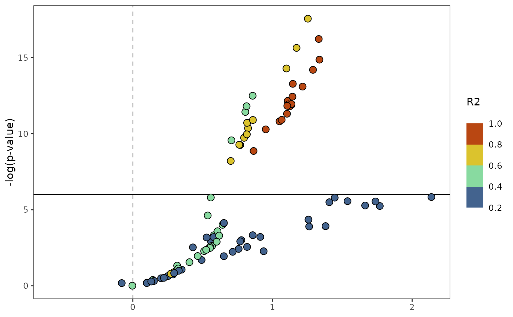

Make volcano style effect size vs pvalue plot
Usage
plot_effect(
panvar.table.list = NULL,
gwas.res = NULL,
ld.list = NULL,
pvals.in.log = TRUE,
plot.r2.thresh = 0.2,
unplotted.alpha = 0.4,
window,
sig.line,
orient = c("V", "H"),
qualitative.annotation = NULL,
qualitative.shape.scale = NULL,
quantitative.annotation = NULL,
quantitative.fill.scale = NULL,
include.legend = T
)Arguments
- panvar.table.list
list, output from make_panvar_tables. Provide either this list or both gwas.res and ld.list.
- gwas.res
data.frame of all gwas results, should contain columns (CHR, POS, PVAL), corresponding to (chromosome, physical position, and pvalue).
- ld.list
list, output of get_ld_in_window
- pvals.in.log
boolean, are pvalues in input data.frames in -log10(p)?
- plot.r2.thresh
minimum LD with qtl snps to plot snps colored by LD
- unplotted.alpha
numeric, number from 0 to 1 to indicate alpha values of snps below the plot.r2.thresh. To not plot these snps set value to 0.
- window
numeric, kilobases on either side of top QTL snp to plot
- sig.line
numeric, -log10(p) value to draw line on plot
- orient
character, will rotate plot 90 degrees. vertical (V) or horizontal (H) refers to how the "buildings" of the plot are plotted. "V" places pvalue on y-axis, "H" places pvalues on x-axis.
- qualitative.annotation
character, column in gwas.res that contains qualitative annotations. For example impact grades from snpeff. See format_snpeff_annotations. Will be plotted as shapes. Only accepts up to 5 classes. "IMPACT" and "IMPACT_PLUS" are special cases that will have a pre-assigned scale used if supplied here.
- qualitative.shape.scale
ggplot scale, an object with a stored call to ggplot2::scale_shape_manual. More often an output of the function make_consistent_scale.
- quantitative.annotation
character, column in gwas.res that contains quantitative annotations. For example, variant effect scores. Will be plotted as fill to points.
- quantitative.fill.scale
character or scale object, either a character indicating the
optionparameter passed to ggplot2::scale_fill_viridis_b that alters the color scale used. Or a previous call to a ggplot2 fill scale for example ggplot2::scale_fill_stepsn.- include.legend
boolean, if TRUE, legend will be included.
Examples
# organize options
tag.snp <- "Chr_05-6857045"
gwas.df <- read.csv(system.file(
"extdata",
"PanvarExample_GLM_GWASresults.csv",
package = "panvaR"))
annotation.table <- read.csv(system.file(
"extdata",
"Setaria_shattering_annotation.csv",
package = "panvaR"))
plink.path <- bigsnpr::download_plink2()
temp.dir <- file.path(tempdir(), "panvar_ex")
dir.create(temp.dir, showWarnings = FALSE)
geno.bed.filename <- "Setaria_shattering_example_pruned.bed"
geno.bed.directory <- system.file("extdata", package="panvaR")
# make input tables
tables <- make_panvar_tables(
gwas.res = gwas.df,
tag.snp = tag.snp,
annotation.table = annotation.table,
plink.path = plink.path,
pvals.in.log = F,
geno.bed.filename = geno.bed.filename,
geno.bed.directory = geno.bed.directory,
window = 25,
temp.dir = temp.dir,
compute.scores = FALSE,
snp.to.gene.buffer = 0)
#> Calculating LD
#> Generating snp to gene correspondence
# make plot
plot_effect(
panvar.table.list = tables,
pvals.in.log = FALSE,
window = 25,
sig.line = 6)

# clean up
unlink(temp.dir, recursive = TRUE)